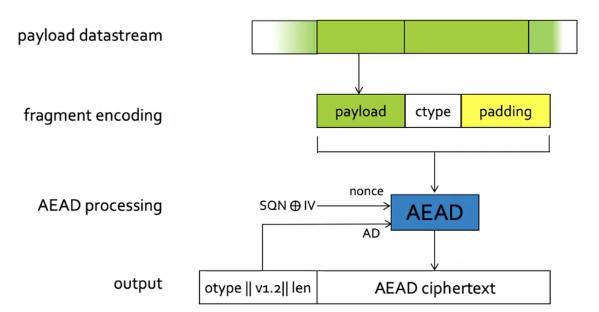

January 2023
Markdown version on github
Compiled using pandoc and gpdf script

Clienthello, anticipating groups that server will acceptServerKeyShare responseHelloRetryRequest and a group description back to client
autorized_keys file in ssh| . | Mix-net | Onion routing |
|---|---|---|
| Forwarding system | Messag-based | Circuit based |
| Layered encryption | yes (asymmetric) | yes (symmetric) |
| Mixing and batching | yes | no |
| Cover traffic | yes (optional) | no |
| Forward Security | no | yes (Telescopic setup) |
| Latency | high | low/medium |
.onion URL (not in DNS)| Challenges | What is needed |
|---|---|
| The security of individual components does not imply the security of the complete system |
|
| The continued innovation of attacker, treats technologies, society, and use-cases creates a danamic and adaptative threats landscape |
|
| Softrware drives everything, and there is no such thing as a secure software. Prepare for continued discovery and publication of publication of vulnerabilities in sotware and hardware |
|
| We depend on a complex supply chain of hardware and software components, which can not be fully controleld. Assume that some components are already compromised |
|
txid to match (else drops response)txid introduces 16 bit of entropybank.com for example| Network links | Network Devices/ Network stack | Applications | |
|---|---|---|---|
| Description | Volumetric attack | Protocol attack | Application-layer attacks |
| Unit of measurements | Bits per second (bps) | Packets per second (pps) | Request per second (rps) |
| Used mechanism/ examples |
|
|
|